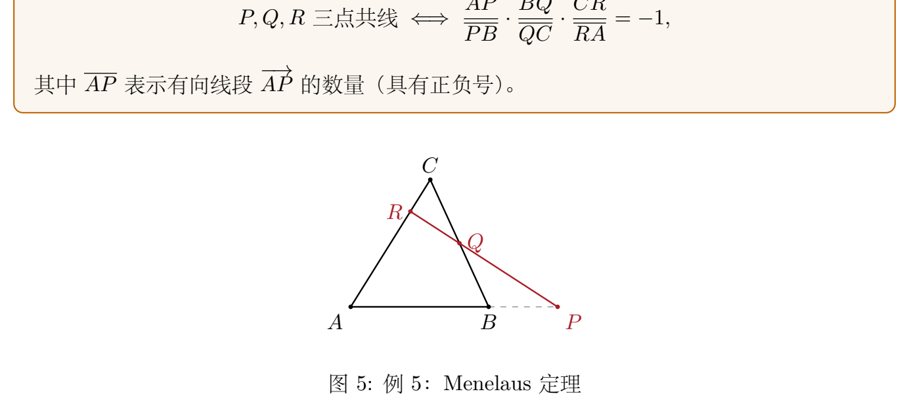
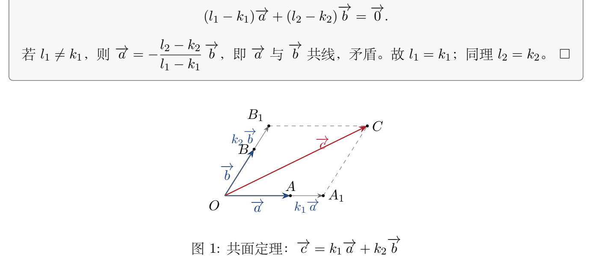

00:05:23—00:12:49
｜ 第一分配律
( μ + ν ) a → = μ a → + ν a → (\mu+\nu)\vec a=\mu\vec a+\nu\vec a 例题/证明
1（00:05:23）｜ 证明
( μ + ν ) a → = μ a → + ν a → (\mu+\nu)\vec a=\mu\vec a+\nu\vec a ⚪ 待掌握 ▲ ▼
命题 ：对任意实数
μ , ν \mu,\nu a → \vec a ( μ + ν ) a → = μ a → + ν a → (\mu+\nu)\vec a=\mu\vec a+\nu\vec a
思路 ：两个向量相等，当且仅当「方向相同且长度相等」。由于
μ a → \mu\vec a ν a → \nu\vec a ( μ + ν ) a → (\mu+\nu)\vec a a → \vec a
逐步推导 （课堂以口述分情况为主，下面把推理补全为严格写法，标
[ [ ] ]
退化情形先排除 ：若
μ = 0 \mu=0 ν = 0 \nu=0 a → = 0 → \vec a=\vec 0 μ + ν = 0 \mu+\nu=0 0 → \vec 0 下设
μ ≠ 0 , ν ≠ 0 , a → ≠ 0 → , μ + ν ≠ 0 \mu\neq0,\ \nu\neq0,\ \vec a\neq\vec 0,\ \mu+\nu\neq0 情形一：μ , ν \mu,\nu 。此时
μ + ν \mu+\nu μ , ν \mu,\nu ( μ + ν ) a → (\mu+\nu)\vec a μ a → \mu\vec a ν a → \nu\vec a μ a → \mu\vec a ν a → \nu\vec a μ a → + ν a → \mu\vec a+\nu\vec a ( μ + ν ) a → = μ a → + ν a → (\mu+\nu)\vec a=\mu\vec a+\nu\vec a 情形二：μ , ν \mu,\nu 。不妨设
μ > 0 , ν < 0 \mu>0,\ \nu<0 β = − ν > 0 \beta=-\nu>0 μ a → + ν a → = μ a → − β a → \mu\vec a+\nu\vec a=\mu\vec a-\beta\vec a
若
μ + ν > 0 \mu+\nu>0 ( μ + ν ) a → (\mu+\nu)\vec a μ a → \mu\vec a μ a → − β a → \mu\vec a-\beta\vec a μ a → \mu\vec a − β a → -\beta\vec a μ \mu − ν -\nu ( μ + ν ) a → (\mu+\nu)\vec a
若
μ + ν < 0 \mu+\nu<0 [ [ ] ]
结论 ：( μ + ν ) a → = μ a → + ν a → (\mu+\nu)\vec a=\mu\vec a+\nu\vec a μ , ν \mu,\nu a → \vec a
意义与易错点 ：老师借这一证明再次强调——「你迈出去的每一步都需要严格去验证，不能说想当然地说『很显然』，很显然的事情很多时候都可能出现漏洞」。数学追求的就是严丝合缝、不出现跳跃。
00:12:49—00:19:20
｜ 第二分配律
μ ( a → + b → ) = μ a → + μ b → \mu(\vec a+\vec b)=\mu\vec a+\mu\vec b 例题/证明
2（00:12:49）｜ 证明
μ ( a → + b → ) = μ a → + μ b → \mu(\vec a+\vec b)=\mu\vec a+\mu\vec b ⚪ 待掌握 ▲ ▼
命题 ：对任意实数
μ \mu a → , b → \vec a,\vec b μ ( a → + b → ) = μ a → + μ b → \mu(\vec a+\vec b)=\mu\vec a+\mu\vec b
思路 ：用图形把
a → \vec a b → \vec b a → + b → \vec a+\vec b μ \mu
[按图还原] 已知与作法 ：从同一点
O O O A → = a → \overrightarrow{OA}=\vec a O B → = b → \overrightarrow{OB}=\vec b O C → = a → + b → \overrightarrow{OC}=\vec a+\vec b O A OA A ′ A' O A ′ → = μ a → \overrightarrow{OA'}=\mu\vec a O B OB B ′ B' O B ′ → = μ b → \overrightarrow{OB'}=\mu\vec b O A ′ OA' O B ′ OB' C ′ C' O C ′ → = μ a → + μ b → \overrightarrow{OC'}=\mu\vec a+\mu\vec b O , A , B , C , A ′ , B ′ , C ′ O,A,B,C,A',B',C'
逐步推导
[ [ ] ] O A ′ O A = O B ′ O B = μ \dfrac{OA'}{OA}=\dfrac{OB'}{OB}=\mu O A ′ C ′ B ′ OA'C'B' O A C B OACB O C OC μ \mu C ′ C' O C OC O C ′ O C = μ \dfrac{OC'}{OC}=\mu O C ′ → = μ O C → = μ ( a → + b → ) \overrightarrow{OC'}=\mu\overrightarrow{OC}=\mu(\vec a+\vec b) O C ′ → = μ a → + μ b → \overrightarrow{OC'}=\mu\vec a+\mu\vec b μ < 0 \mu<0
结论 ：μ ( a → + b → ) = μ a → + μ b → \mu(\vec a+\vec b)=\mu\vec a+\mu\vec b
意义与易错点 ：这条分配律把「数乘」与「加法」联系起来，是后面所有线性运算性质的基础。注意它依赖的几何事实是「平行且成比例的线段对应相似」，而不是凭空把系数
μ \mu
二、中线向量和为零与向量的线性运算（00:19:39—00:28:29）
00:19:39—00:23:33 ｜
三角形三条中线向量之和为零例题/证明
3（00:19:39）｜ 证明
A D → + B E → + C F → = 0 → \overrightarrow{AD}+\overrightarrow{BE}+\overrightarrow{CF}=\vec 0 ⚪ 待掌握 ▲ ▼
命题 ：在
△ A B C \triangle ABC D , E , F D,E,F B C , C A , A B BC,CA,AB A D , B E , C F AD,BE,CF
思路 ：把每条中线都用原三角形的三条边
A B → , B C → , C A → \overrightarrow{AB},\overrightarrow{BC},\overrightarrow{CA} A B → + B C → + C A → = 0 → \overrightarrow{AB}+\overrightarrow{BC}+\overrightarrow{CA}=\vec 0
逐步推导 （课堂给出完整推导）： 1.
D D B C BC B D → = 1 2 B C → \overrightarrow{BD}=\dfrac12\overrightarrow{BC}
2.
同理，
E E
是
C A CA
中点，
C E → = 1 2 C A → \overrightarrow{CE}=\dfrac12\overrightarrow{CA} ，
3.
F F
是
A B AB
中点，
A F → = 1 2 A B → \overrightarrow{AF}=\dfrac12\overrightarrow{AB} ，
4. 三式相加：
A D → + B E → + C F → = ( A B → + B C → + C A → ) + 1 2 ( B C → + C A → + A B → ) = 3 2 ( A B → + B C → + C A → ) = 3 2 0 → = 0 → . \overrightarrow{AD}+\overrightarrow{BE}+\overrightarrow{CF}
=\left(\overrightarrow{AB}+\overrightarrow{BC}+\overrightarrow{CA}\right)
+\frac12\left(\overrightarrow{BC}+\overrightarrow{CA}+\overrightarrow{AB}\right)
=\frac32\left(\overrightarrow{AB}+\overrightarrow{BC}+\overrightarrow{CA}\right)
=\frac32\vec 0=\vec 0. 结论 ：三条中线的向量和为零向量。
意义与易错点 ：这是一个很基础但很有用的小结论。老师借此说明：用向量处理平面（乃至立体）几何问题，关键是不能「只在脑子里想」，而要把「已知—作法—关系」清清楚楚写出来；向量法在高考、竞赛里很常见，但本课程要求从一开始就严格。
00:25:29—00:26:11 ｜ 向量的线性运算把前面讲的「向量加法」与「数乘」合在一起，称为向量的线性运算 。后续关于向量之间「能不能互相表示、彼此之间是什么关系」的讨论，全都建立在加法与数乘这两种线性运算之上。
00:26:11—00:28:29 ｜ 线性组合与线性表示
线性组合 ：给定
n n a → 1 , … , a → n \vec a_1,\dots,\vec a_n n n λ 1 , … , λ n \lambda_1,\dots,\lambda_n n n 线性组合 。线性表示 ：若向量
a → \vec a a → \vec a a → 1 , … , a → n \vec a_1,\dots,\vec a_n 线性表示 （或称线性表出）。
老师提示：线性组合与线性表示本质上是同一件事的两种说法——「一个表达式」与「被表示成这个表达式」。
三、两向量共线的充要条件（00:28:29—00:33:02）
00:28:29—00:33:02 ｜
两向量共线的充要条件与系数唯一性例题/证明
4（00:28:29）｜ 证明
b → ∥ a → ( a → ≠ 0 → ) ⇔ ∃ ! k , b → = k a → \vec b\parallel\vec a\ (\vec a\neq\vec 0)\iff \exists!\,k,\ \vec b=k\vec a ⚪ 待掌握 ▲ ▼
命题 ：设
a → ≠ 0 → \vec a\neq\vec 0 b → \vec b a → \vec a k k
思路 ：共线和「能用一个数乘出来」是一回事。证明分充分性、必要性、唯一性三部分；必要性通过把两向量都写成单位向量来处理。
逐步推导 （课堂给出完整证明）： 1.
充分性 ：若
b → = k a → \vec b=k\vec a b → \vec b a → \vec a k > 0 k>0 k < 0 k<0 必要性 ：设
b → ∥ a → \vec b\parallel\vec a a → ≠ 0 → \vec a\neq\vec 0 b → = 0 → \vec b=\vec 0 k = 0 k=0 b → = 0 ⋅ a → \vec b=0\cdot\vec a b → ≠ 0 → \vec b\neq\vec 0 a ̂ = a → | a → | \hat a=\dfrac{\vec a}{|\vec a|} b ̂ = b → | b → | \hat b=\dfrac{\vec b}{|\vec b|} b ̂ = ± a ̂ \hat b=\pm\hat a
取
k = ± | b → | | a → | k=\pm\dfrac{|\vec b|}{|\vec a|}
即得
b → = k a → \vec b=k\vec a 。
3.
唯一性 ：若同时有
b → = k a → \vec b=k\vec a
与
b → = k ′ a → \vec b=k'\vec a ，则
( k − k ′ ) a → = 0 → (k-k')\vec a=\vec 0 。由于
a → ≠ 0 → \vec a\neq\vec 0 ，必有
k − k ′ = 0 k-k'=0 ，即
k = k ′ k=k' 。
结论 ：当
a → ≠ 0 → \vec a\neq\vec 0 b → \vec b a → \vec a ⇔ \iff k k b → = k a → \vec b=k\vec a k k
意义与易错点 ：这是整个「共线、共面、线性相关」理论的基石。易错点是忘了前提
a → ≠ 0 → \vec a\neq\vec 0
四、三向量共面的充要条件与空间向量分解（00:33:02—00:50:06）
00:33:02—00:41:24 ｜
三向量共面的充要条件例题/证明
5（00:33:02）｜ 证明
c → \vec c a → , b → \vec a,\vec b ⇔ ∃ ! k 1 , k 2 , c → = k 1 a → + k 2 b → \iff \exists!\,k_1,k_2,\ \vec c=k_1\vec a+k_2\vec b ⚪ 待掌握 ▲ ▼
命题 ：设
a → , b → \vec a,\vec b c → \vec c a → , b → \vec a,\vec b k 1 , k 2 k_1,k_2
思路 ：充分性由三角形法则直接得到；必要性通过「过点作平行线、交到两条已知边上」的几何构造，把
c → \vec c a → \vec a b → \vec b
逐步推导 （课堂给出完整证明）： 1.
充分性 ：若
c → = k 1 a → + k 2 b → \vec c=k_1\vec a+k_2\vec b k 1 , k 2 k_1,k_2 0 0 k 2 = 0 k_2=0 c → = k 1 a → \vec c=k_1\vec a a → \vec a a → , b → \vec a,\vec b 0 0 k 1 a → k_1\vec a k 2 b → k_2\vec b a → , b → \vec a,\vec b c → \vec c 必要性
[ [ ] ] c → \vec c a → , b → \vec a,\vec b O O O A → = a → \overrightarrow{OA}=\vec a O B → = b → \overrightarrow{OB}=\vec b O C → = c → \overrightarrow{OC}=\vec c C C b → \vec b O A OA A 1 A_1 C C a → \vec a O B OB B 1 B_1 O , A , B , C , A 1 , B 1 O,A,B,C,A_1,B_1 O A 1 → \overrightarrow{OA_1} a → \vec a k 1 k_1 O A 1 → = k 1 a → \overrightarrow{OA_1}=k_1\vec a k 2 k_2 O B 1 → = k 2 b → \overrightarrow{OB_1}=k_2\vec b O C → = O A 1 → + O B 1 → \overrightarrow{OC}=\overrightarrow{OA_1}+\overrightarrow{OB_1}
3.
唯一性 ：若同时有
c → = ℓ 1 a → + ℓ 2 b → \vec c=\ell_1\vec a+\ell_2\vec b ，则
( k 1 − ℓ 1 ) a → + ( k 2 − ℓ 2 ) b → = 0 → (k_1-\ell_1)\vec a+(k_2-\ell_2)\vec b=\vec 0 。由于
a → , b → \vec a,\vec b
不共线（后面会证：不共线即线性无关），只有系数全为零，故
k 1 = ℓ 1 , k 2 = ℓ 2 k_1=\ell_1,\ k_2=\ell_2 。
结论 ：在不共线的
a → , b → \vec a,\vec b k 1 a → + k 2 b → k_1\vec a+k_2\vec b
意义与易错点 ：这一结论把「共面」翻译成了「能用两个已知向量线性表出」。注意前提是
a → , b → \vec a,\vec b
00:41:24—00:50:06 ｜
空间向量的分解定理（基的雏形）例题/证明
6（00:41:24）｜ 证明任一向量可唯一表为三个不共面向量的线性组合⚪ 待掌握 ▲ ▼
命题 ：设
a → , b → , c → \vec a,\vec b,\vec c r → \vec r
其中
k 1 , k 2 , k 3 k_1,k_2,k_3
就是
r → \vec r
关于这组向量的坐标。
思路 ：从同一点引出四条有向线段，过
r → \vec r a → , b → \vec a,\vec b b → , c → \vec b,\vec c a → , c → \vec a,\vec c
[按图还原] 已知与作法 ：从点
O O O A → = a → \overrightarrow{OA}=\vec a O B → = b → \overrightarrow{OB}=\vec b O C → = c → \overrightarrow{OC}=\vec c O R → = r → \overrightarrow{OR}=\vec r a → , b → , c → \vec a,\vec b,\vec c R R a → , b → \vec a,\vec b O A B OAB O C OC C 1 C_1 R R b → , c → \vec b,\vec c O A OA A 1 A_1 R R a → , c → \vec a,\vec c O B OB B 1 B_1 O , A , B , C , R , A 1 , B 1 , C 1 O,A,B,C,R,A_1,B_1,C_1
逐步推导 （课堂给出构造并口述结论；唯一性说明「类似，不做了」）：
1. 由上一节共面结论，点
R R O A 1 , O B 1 , O C 1 OA_1,OB_1,OC_1 [ [ ] ] a → + b → + c → \vec a+\vec b+\vec c
2.
由共线条件：
O A 1 → \overrightarrow{OA_1}
与
a → \vec a
共线
⇒ O A 1 → = k 1 a → \Rightarrow \overrightarrow{OA_1}=k_1\vec a ；
O B 1 → \overrightarrow{OB_1}
与
b → \vec b
共线
⇒ O B 1 → = k 2 b → \Rightarrow \overrightarrow{OB_1}=k_2\vec b ；
O C 1 → \overrightarrow{OC_1}
与
c → \vec c
共线
⇒ O C 1 → = k 3 c → \Rightarrow \overrightarrow{OC_1}=k_3\vec c 。
3. 代入得
r → = k 1 a → + k 2 b → + k 3 c → \vec r=k_1\vec a+k_2\vec b+k_3\vec c 。
4.
唯一性
[ [ 补全
] ] ：老师说明「唯一性的证明完全是类似的，就不做了」；严格地说，若还有
r → = ℓ 1 a → + ℓ 2 b → + ℓ 3 c → \vec r=\ell_1\vec a+\ell_2\vec b+\ell_3\vec c ，相减得
( ⋯ ) a → + ( ⋯ ) b → + ( ⋯ ) c → = 0 → (\cdots)\vec a+(\cdots)\vec b+(\cdots)\vec c=\vec 0 ，由
a → , b → , c → \vec a,\vec b,\vec c
不共面可推出三组系数均为零，故表示唯一。
结论 ：三个不共面的向量可以「表示出空间中所有向量」，且表示唯一；这组系数就是坐标。
意义与易错点 ：老师点明——正因为分解唯一，才能把
k 1 , k 2 , k 3 k_1,k_2,k_3
五、线性相关与线性无关（00:50:12—01:04:00）
00:50:12—00:52:54 ｜
线性相关与线性无关的定义给定
n n a → 1 , a → 2 , … , a → n \vec a_1,\vec a_2,\dots,\vec a_n 不全为零 的实数
λ 1 , … , λ n \lambda_1,\dots,\lambda_n
则称这
n n 线性相关 。
反之（即「否则」），如果只有当
λ 1 = λ 2 = ⋯ = λ n = 0 \lambda_1=\lambda_2=\cdots=\lambda_n=0 线性无关 。
老师给了一个极有用的判别工具：要证明一组向量线性无关，只需证「若
∑ λ i a → i = 0 → \sum\lambda_i\vec a_i=\vec 0 λ i = 0 \lambda_i=0 。这一点在后面判定问题时反复使用。例如三个向量
a → , b → , c → \vec a,\vec b,\vec c a → − b → + c → = 0 → \vec a-\vec b+\vec c=\vec 0 1 , − 1 , 1 1,-1,1
00:54:11—01:00:03 ｜
两个基本定理：相关与表示、部分相关与全体相关例题/证明
7（00:54:11）｜ 向量组线性相关
⇔ \iff ⚪ 待掌握 ▲ ▼
命题 ：n n a → 1 , … , a → n \vec a_1,\dots,\vec a_n n − 1 n-1
思路 ：两方向都只需做一次移项。
逐步推导 （课堂给出证明）： 1.
必要性 （相关
⇒ \Rightarrow λ i \lambda_i ∑ λ i a → i = 0 → \sum\lambda_i\vec a_i=\vec 0 λ 1 ≠ 0 \lambda_1\neq0
即
a → 1 \vec a_1
可由其余向量线性表示。 2.
充分性 （可表示
⇒ \Rightarrow
相关）：若某个
a → j = ∑ i ≠ j μ i a → i \vec a_j=\sum_{i\neq j}\mu_i\vec a_i ，移项得
其中
a → j \vec a_j
的系数为
− 1 ≠ 0 -1\neq0 ，故系数不全为零，向量组相关。
结论 ：线性相关等价于「能互相表出其中一个」。
例题/证明
8（00:57:51）｜ 部分线性相关
⇒ \Rightarrow ⚪ 待掌握 ▲ ▼
命题 ：若向量组的一部分线性相关，则整个向量组线性相关。等价地（逆否命题）：若整个向量组线性无关，则它的任意一部分也线性无关。
思路 ：在相关的那部分里取一组不全为零的系数，其余向量系数补
0 0 0 → \vec 0
逐步推导 （课堂给出证明）： 1. 设
a → 1 , … , a → l ( l < n ) \vec a_1,\dots,\vec a_l\ (l<n) λ 1 , … , λ l \lambda_1,\dots,\lambda_l λ 1 a → 1 + ⋯ + λ l a → l = 0 → \lambda_1\vec a_1+\cdots+\lambda_l\vec a_l=\vec 0 λ l + 1 = ⋯ = λ n = 0 \lambda_{l+1}=\cdots=\lambda_n=0 ∑ i = 1 n λ i a → i = 0 → \sum_{i=1}^n\lambda_i\vec a_i=\vec 0 ⇒ \Rightarrow
结论 ：线性相关的「病症」会传染给整体；独立的整体中挑出的任何子集都独立。
01:00:40—01:04:00 ｜
推论：与共线、共面、维数及基的关系把前面的结论汇总，得到一组重要推论（老师称为「把它揉在一起」）：
一个向量 线性相关
⇔ \iff 两个向量 线性相关
⇔ \iff b → = k a → \vec b=k\vec a 三个向量 线性相关
⇔ \iff c → = k 1 a → + k 2 b → \vec c=k_1\vec a+k_2\vec b 在三维空间 中，任意四个向量必线性相关；换句话说，空间中最多只有三个线性无关的向量。
由此引出维数 的概念：一个空间里线性无关向量的最大个数，就是该空间的维数。三维空间里有三个线性无关的向量，且其中任意一个向量都能由这三个向量线性表示——这三个向量就构成一组基 。
老师在此留了一个观念上的提醒
[ [ ] ]
六、综合例题：定比分点、重心与共面判定（01:04:18—01:36:32）
01:04:18—01:07:54 ｜
例题：直线上的定比分点公式例题/证明
9（01:04:18）｜ 由
A P → = λ P B → \overrightarrow{AP}=\lambda\overrightarrow{PB} O P → \overrightarrow{OP} ⚪ 待掌握 ▲ ▼
命题 ：一条直线上有三点
A , P , B A,P,B A P → = λ P B → \overrightarrow{AP}=\lambda\overrightarrow{PB} O O O P → \overrightarrow{OP} O A → , O B → \overrightarrow{OA},\overrightarrow{OB}
[按图还原] ：已知一条直线上三点
A , P , B A,P,B A P → = λ P B → \overrightarrow{AP}=\lambda\overrightarrow{PB} O O O P → \overrightarrow{OP} O A → , O B → \overrightarrow{OA},\overrightarrow{OB} O , A , P , B O,A,P,B
思路 ：把
O P → \overrightarrow{OP} O A → + A P → \overrightarrow{OA}+\overrightarrow{AP} A P → \overrightarrow{AP} λ P B → \lambda\overrightarrow{PB} P B → = O B → − O P → \overrightarrow{PB}=\overrightarrow{OB}-\overrightarrow{OP} O P → \overrightarrow{OP}
逐步推导 （课堂给出完整推导）： 1.
O P → = O A → + A P → = O A → + λ P B → \overrightarrow{OP}=\overrightarrow{OA}+\overrightarrow{AP}=\overrightarrow{OA}+\lambda\overrightarrow{PB} P B → = O B → − O P → \overrightarrow{PB}=\overrightarrow{OB}-\overrightarrow{OP}
3.
整理：
O P → + λ O P → = O A → + λ O B → \overrightarrow{OP}+\lambda\overrightarrow{OP}=\overrightarrow{OA}+\lambda\overrightarrow{OB} ，即
( 1 + λ ) O P → = O A → + λ O B → (1+\lambda)\overrightarrow{OP}=\overrightarrow{OA}+\lambda\overrightarrow{OB} 。
4. 当
λ ≠ − 1 \lambda\neq-1
时，
结论 ：这正是线段的定比分点 向量公式；系数之和为
1 1 + λ + λ 1 + λ = 1 \dfrac{1}{1+\lambda}+\dfrac{\lambda}{1+\lambda}=1
易错点 ：当
λ = − 1 \lambda=-1 0 0 A P → = − P B → \overrightarrow{AP}=-\overrightarrow{PB} P P A A
01:08:01—01:10:34 ｜ 例题：点
P P A B AB 例题/证明
10（01:08:01）｜
P P A , B A,B ⇔ O P → = s O A → + t O B → , s + t = 1 \iff \overrightarrow{OP}=s\overrightarrow{OA}+t\overrightarrow{OB},\ s+t=1 ⚪ 待掌握 ▲ ▼
命题 ：点
P P A B AB P P A , B A,B s , t s,t s + t = 1 s+t=1
思路 ：这其实就是上一题的另一种「面孔」。把上一题的系数代进来，立即看到
s + t = 1 s+t=1 s + t = 1 s+t=1 P P A B AB
逐步推导 （课堂说明两式同源，未重证）： 1.
由上题，s = 1 1 + λ , t = λ 1 + λ s=\dfrac{1}{1+\lambda},\ t=\dfrac{\lambda}{1+\lambda} s + t = 1 s+t=1 O P → = s O A → + t O B → \overrightarrow{OP}=s\overrightarrow{OA}+t\overrightarrow{OB} s + t = 1 s+t=1 t = 1 − s t=1-s
即
O P → − O B → = s B A → \overrightarrow{OP}-\overrightarrow{OB}=s\overrightarrow{BA} ，说明
O P → \overrightarrow{OP}
与
O B → \overrightarrow{OB}
的差平行于
A B AB ，故
P P
在直线
A B AB
上。
结论 ：「点在直线上」与「系数和为
1」是同一件事的两种表达；做题时看哪一个方便就用哪一个。
01:10:54—01:13:39 ｜
例题：三角形三条中线交于重心且分比为
2 : 1 2:1 例题/证明
11（01:10:54）｜ 证明三条中线共点，且该点分每条中线为
2 : 1 2:1 ⚪ 待掌握 ▲ ▼
命题 ：在
△ A B C \triangle ABC A D , B E , C F AD,BE,CF G G
思路 ：先取两条中线
A D , B E AD,BE G G A G → = m A D → \overrightarrow{AG}=m\overrightarrow{AD} B G → = n B E → \overrightarrow{BG}=n\overrightarrow{BE} A G → \overrightarrow{AG} A B → , B C → \overrightarrow{AB},\overrightarrow{BC} A B → , B C → \overrightarrow{AB},\overrightarrow{BC} m = n = 2 3 m=n=\frac23
[按图还原] ：已知
△ A B C \triangle ABC D , E , F D,E,F B C , C A , A B BC,CA,AB A D AD B E BE G G
逐步推导 （课堂给出完整推导）： 1. 由中点关系：
2. 设
A G → = m A D → \overrightarrow{AG}=m\overrightarrow{AD} ，则
3.
另一方面，
A G → = A B → + B G → = A B → + n B E → = A B → + n ( B C → + 1 2 C A → ) \overrightarrow{AG}=\overrightarrow{AB}+\overrightarrow{BG}=\overrightarrow{AB}+n\overrightarrow{BE}
=\overrightarrow{AB}+n\left(\overrightarrow{BC}+\frac12\overrightarrow{CA}\right) 。
又
C A → = − ( A B → + B C → ) \overrightarrow{CA}=-(\overrightarrow{AB}+\overrightarrow{BC}) ，代入得
A G → = A B → + n B C → − n 2 ( A B → + B C → ) = ( 1 − n 2 ) A B → + n 2 B C → . \overrightarrow{AG}=\overrightarrow{AB}+n\overrightarrow{BC}-\frac n2(\overrightarrow{AB}+\overrightarrow{BC})
=\left(1-\frac n2\right)\overrightarrow{AB}+\frac n2\overrightarrow{BC}.\tag{ii}
4. 比较 (i)(ii)：因为
A B → \overrightarrow{AB}
与
B C → \overrightarrow{BC}
不共线（线性无关），对应系数相等：
由第二式得
m = n m=n ，代入第一式：
m = 1 − m 2 ⇒ 3 2 m = 1 ⇒ m = 2 3 m=1-\dfrac m2\ \Rightarrow\ \dfrac32 m=1\ \Rightarrow\ m=\dfrac23 ，故
m = n = 2 3 m=n=\dfrac23 。
5. 同理（老师口述「用同样的方法」）对中线
C F CF
可得
C G → = 2 3 C F → \overrightarrow{CG}=\dfrac23\overrightarrow{CF} [ [ 补全
] ] ：对称地取
A D AD
与
C F CF
的交点，或用
B E BE
与
C F CF
的交点，同样解得分比为
2 3 \frac23 ，故三条中线交于同一点
G G 。
结论 ：三条中线交于重心
G G G G 2 : 2: 1 1 A G : G D = 2 : 1 AG:GD=2:1
意义与易错点 ：这是向量法处理平面几何问题的典型范例。老师借此再次强调学习方法——期末或课堂练习中要求「用向量法证平面几何」，很多同学却仍用中学那套硬凑，根本没有动用向量代数；更有人直接把
AI 生成的截图交上来，自己根本没推导过。老师明确表示不禁止用
AI，但至少要看懂、再用自己的语言抄写一遍 ，否则到考试时成绩会如实反映出来。
01:25:33—01:30:43 ｜
例题：判定向量组
A , B , C A,B,C 例题/证明
12（01:25:33）｜ 已知
A → , B → , C → \vec A,\vec B,\vec C a → , b → , c → \vec a,\vec b,\vec c ⚪ 待掌握 ▲ ▼
命题 ：已知三个向量
a → , b → , c → \vec a,\vec b,\vec c
[ [ 注：向量系数为依老师口述展开后得到的方程组还原，转写较乱，已按一致形式整理，如与课堂有出入以课堂为准
[ ? ] 。
] ]
判定
A → , B → , C → \vec A,\vec B,\vec C
是否共面（即是否线性相关）。
思路 ：「是否共面」等价于「是否线性相关」。设
X A → + Y B → + Z C → = 0 → X\vec A+Y\vec B+Z\vec C=\vec 0 a → , b → , c → \vec a,\vec b,\vec c X , Y , Z X,Y,Z A → , B → , C → \vec A,\vec B,\vec C
逐步推导 （课堂给出完整推导）： 1. 代入展开并整理：
2. 按
a → , b → , c → \vec a,\vec b,\vec c
归组：
3. 因为
a → , b → , c → \vec a,\vec b,\vec c
线性无关，各系数必须为
0 0 ：
{ X + Y + Z = 0 , X + 2 Y + Z = 0 , X + 2 Z = 0 . \begin{cases}
X+Y+Z=0,\\
X+2Y+Z=0,\\
X+2Z=0.
\end{cases} 4. 求解：前两式相减得
Y = 0 Y=0 ；代入第一式得
X + Z = 0 X+Z=0 ；由第三式
X + 2 Z = 0 X+2Z=0 ，相减得
Z = 0 Z=0 ，进而
X = 0 X=0 。
结论 ：方程组只有零解
X = Y = Z = 0 X=Y=Z=0 A → , B → , C → \vec A,\vec B,\vec C 三个向量不共面 。
意义与易错点 ：这类题的套路是——把它翻译成「判断线性相关还是无关」，再翻译成「齐次方程组是否只有零解」。系数矩阵
( 1 1 1 1 2 1 1 0 2 ) \begin{pmatrix}1&1&1\\1&2&1\\1&0&2\end{pmatrix} 1 ≠ 0 1\neq0
01:31:02—01:36:32 ｜
例题：三角形边上三点共线的充要条件（梅涅劳斯型）例题/证明
13（01:31:02）｜
P , Q , R P,Q,R ⚪ 待掌握 ▲ ▼
命题 ：在
△ A B C \triangle ABC P P B C BC Q Q C A CA R R A B AB P , Q , R P,Q,R 有向线段 ，带正负号）
思路 ：在平面外（或提升到三维视角）任取一点
O O O P → , O Q → , O R → \overrightarrow{OP},\overrightarrow{OQ},\overrightarrow{OR} O A → , O B → , O C → \overrightarrow{OA},\overrightarrow{OB},\overrightarrow{OC} P , Q , R P,Q,R + 1 +1
[按图还原] ：已知
△ A B C \triangle ABC P ∈ B C , Q ∈ C A , R ∈ A B P\in BC,\ Q\in CA,\ R\in AB P , Q , R P,Q,R − 1 -1
逐步推导
[ [ ] ] O O
2. 由这些系数与边上分点比例的关系，可得
u , v u,v
与
A P P B \dfrac{AP}{PB}
等有关；再把
P , Q , R P,Q,R
共线（即三点可用「系数和为 1」的同一组基底表示）代入。 3. 化简即得
A P P B ⋅ B Q Q C ⋅ C R R A = − 1 \dfrac{AP}{PB}\cdot\dfrac{BQ}{QC}\cdot\dfrac{CR}{RA}=-1 （有向线段）。乘积为
− 1 -1
正是梅涅劳斯（Menelaus）定理；若把条件改为「三线
A P , B Q , C R AP,BQ,CR
共点」，则得到乘积为
+ 1 +1
的塞瓦（Ceva）定理，思路完全相同。

图 5: Menelaus 定理的向量比值模型 结论 ：P , Q , R P,Q,R ⇔ \iff − 1 -1
意义与易错点 ：关键在于比值要用有向线段 （带正负号），所以等号右侧是
− 1 -1

图 1: 共面定理：不共线基向量张成平面